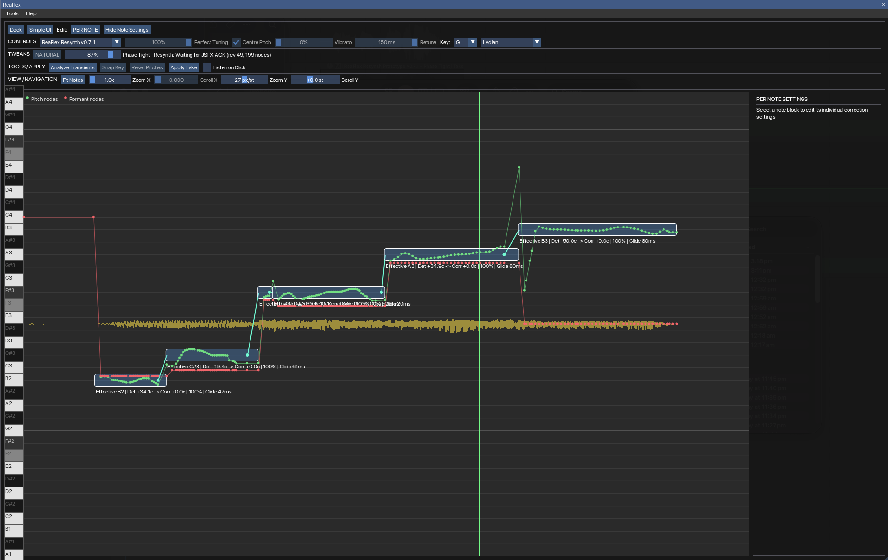
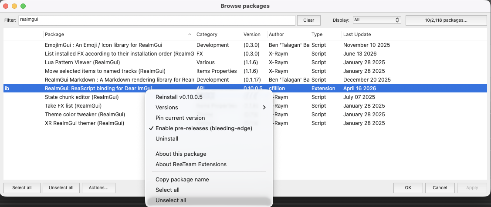
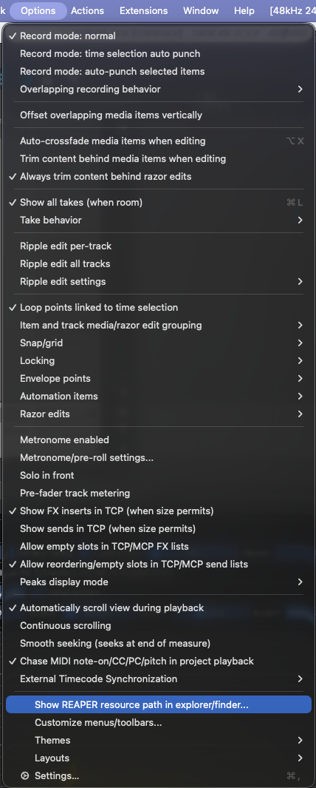
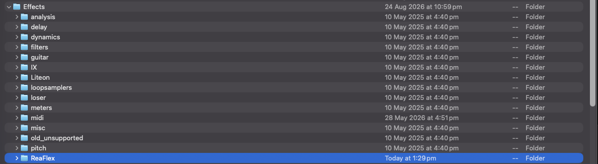
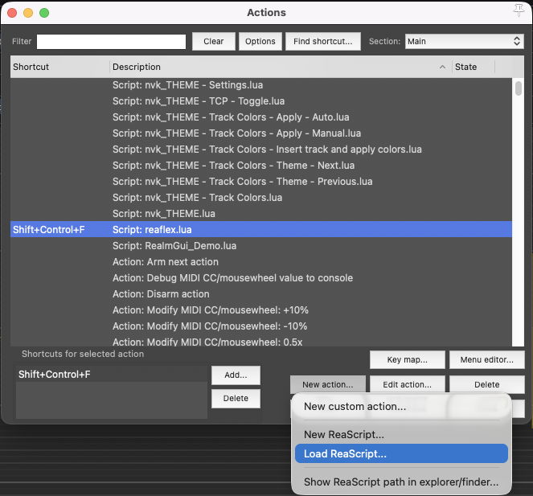
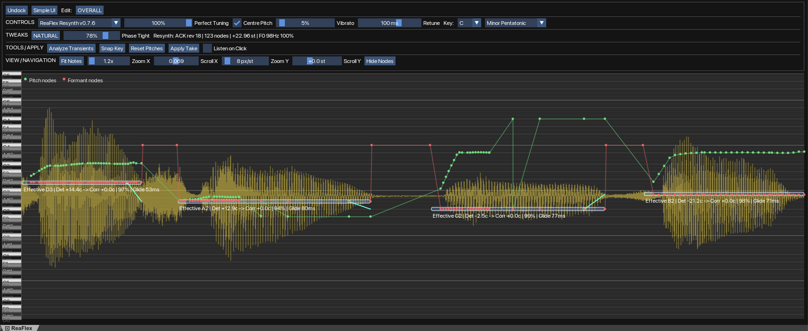
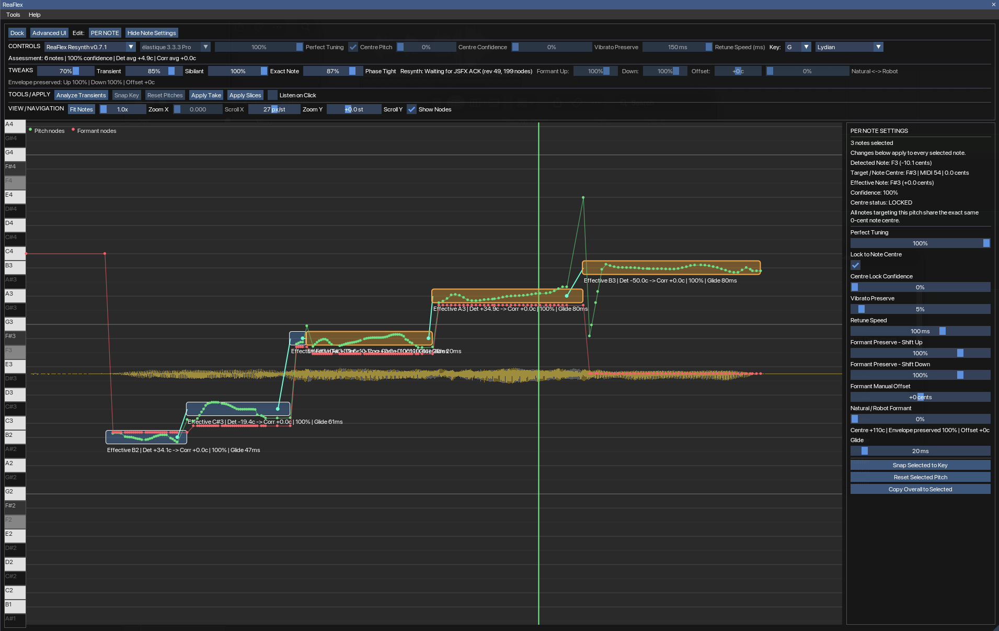
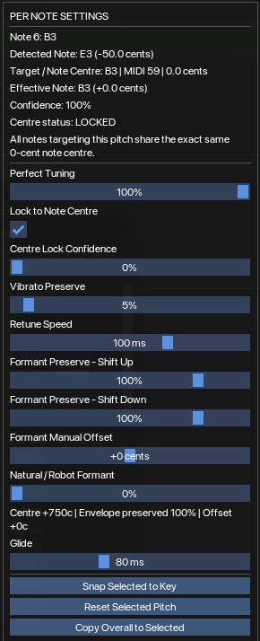

Detect & display notes
Analyze monophonic vocal audio into note blocks with detected pitch and pitch movement over time.
[ free / experimental / made for REAPER ]
It analyzes a monophonic vocal, draws the detected notes as editable blocks, and lets you correct pitch without leaving your REAPER project.
You can move and reshape notes, snap them to a key or scale, adjust how hard the tuning pulls toward the centre, preserve vibrato, tune individual notes, and use the included experimental ReaFlex resynthesis engine.
This is an independent project and is still being developed. The resynth backend in particular is experimental, so expect the sound and controls to keep changing as the project improves.

01 / ABOUT
ReaFlex is not a VST plug-in. The editor itself is a Lua ReaScript, while the custom pitch renderer is a JSFX that REAPER loads as take FX.
Analyze monophonic vocal audio into note blocks with detected pitch and pitch movement over time.
Move notes, resize their boundaries, split or merge blocks, edit glide behaviour, and work on several selected notes at once.
Select a root and scale. Changing either can immediately re-target the detected notes to pitches that belong to that key.
Perfect Tuning, Centre Pitch, Vibrato and Retune controls let you move between transparent correction and deliberately hard tuning.
Start with one set of controls for the whole take, then switch to Per Note mode when one part of the performance needs different treatment.
ReaFlex includes an experimental phase-coherent JSFX renderer with formant shaping and Phase Tightness controls. REAPER's native processing remains available as an alternative.
02 / DEMO
A short look at the workflow: original vocal → analysis → note edits → corrected playback.
03 / INSTALLATION
ReaFlex has two parts: a .lua file that provides the editor and a
.jsfx file that provides the custom resynthesis engine. Both need
to be placed where REAPER can find them.
DEPENDENCY
If you already run other ReaImGui scripts, you can skip this step. Otherwise, open REAPER and use ReaPack to install ReaImGui.
ReaImGui.If you do not have ReaPack yet, install ReaPack first, then return to this step.

FIND THE RIGHT FOLDER
Do not guess the application folders. REAPER can open the exact resource folder it is currently using.
You should see folders such as Effects, Scripts,
Data and others.

RESYNTH ENGINE
Inside the resource path, open Effects. Create a folder named
ReaFlex if it does not already exist.
Copy the ReaFlex .jsfx file into:
REAPER resource path/
└── Effects/
└── ReaFlex/
└── ReaFlex_Resynth_....jsfx
The exact renderer filename may change between releases. Use the
.jsfx file included with the release you downloaded.
After copying it, restart REAPER or rescan the FX browser so the new JSFX is visible.

EDITOR SCRIPT
A tidy place for the script is Scripts/ReaFlex inside the
resource folder:
REAPER resource path/
└── Scripts/
└── ReaFlex/
└── ReaFlex_....luaThen register it with REAPER:
.lua file you just copied.
FIRST RUN
ReaFlex starts with its custom resynth backend selected in current builds. If the JSFX was not installed correctly, check the troubleshooting section below.

ReaFlex opens without the “ReaImGui is required” error.
The backend selector can use ReaFlex Resynth.
Analyze Transients creates note blocks when a suitable audio item is selected.
Changing key/scale or dragging a note causes an audible pitch change.
ReaImGui is required.
Install or update ReaImGui through ReaPack, then restart REAPER.
.jsfx file is inside the active REAPER resource
path at Effects/ReaFlex/, then restart/rescan REAPER.
.lua file.
04 / USING REAFLEX
Select the vocal item and analyze it to create the note blocks.
Choose a root and scale. ReaFlex will use that information when snapping notes.
The current defaults aim for strong centre tuning while retaining a little pitch movement. Use Listen on Click if you want to audition notes quickly.
Drag note blocks to the intended pitch. Split or merge blocks where the automatic note boundaries do not match the phrase.
Leave the overall settings alone when they work for most of the take; use Per Note mode for the few notes that need different behaviour.
Use Apply Take to render the result to a new take while keeping the original workflow inside REAPER.

05 / INTERFACE

06 / FAQ
Yes. The project is available from its public GitHub repository.
ReaFlex is mainly aimed at monophonic vocal material: one clearly identifiable sung pitch at a time.
Not in the usual VST/AU sense. The interface is a Lua ReaScript and the custom renderer is a JSFX loaded by REAPER.
It is the project's experimental custom pitch-rendering backend. It uses a phase-coherent spectral approach and exposes controls such as Phase Tightness and formant character.
Most edits only need a few controls. Simple mode keeps those visible; Advanced mode exposes the less common DSP, formant and navigation settings.
Yes. ReaFlex includes a native REAPER processing path as an alternative to the experimental resynth backend.
07 / DOWNLOAD
ReaFlex is still evolving. Bug reports, awkward vocal examples and useful feedback are genuinely helpful.
08 / SUPPORT
Donations are optional. Using it, testing it and reporting useful bugs also helps the project.